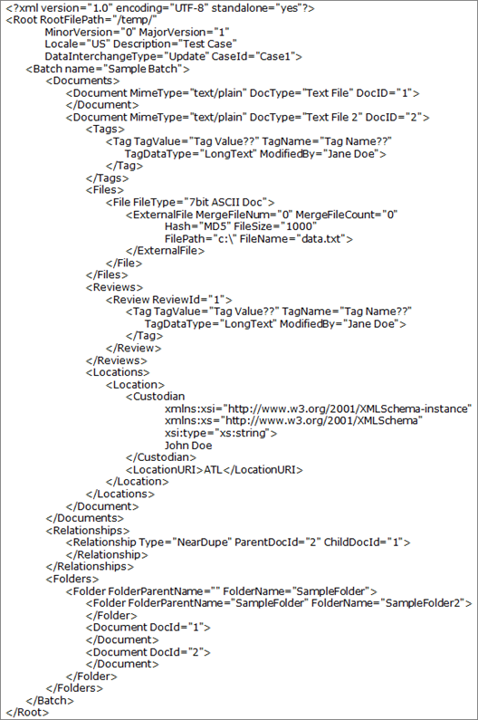

The EDRM XML interchange format provides an XML schema to facilitate the movement of electronically stored information (ESI) from one step of the electronic discovery process to the next, from one software program to the next, and from one organization to the next.
EDRM XML 1.2 example file:
